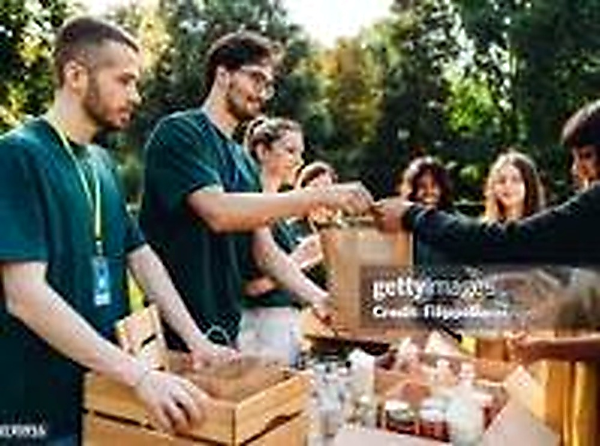

Stronger Together — Join the Movement

Together, we can turn compassion into practical action and create stronger communities.
Our Mission
Hope Connect Foundation is a grassroots organization dedicated to fostering collaboration, social justice, and collective growth. We unite people of all backgrounds to create lasting impact in underserved communities through action-oriented programs and partnerships.
What We Do
- 🏫 Community Education & Outreach
- 🌱 Environmental Initiatives
- 🤝 Youth Mentorship & Leadership
- 🍲 Food Drives & Support Services